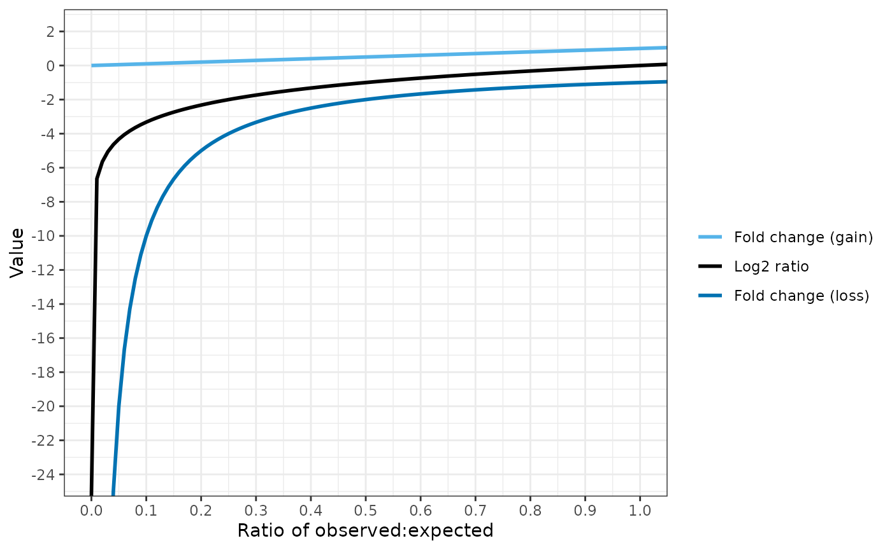
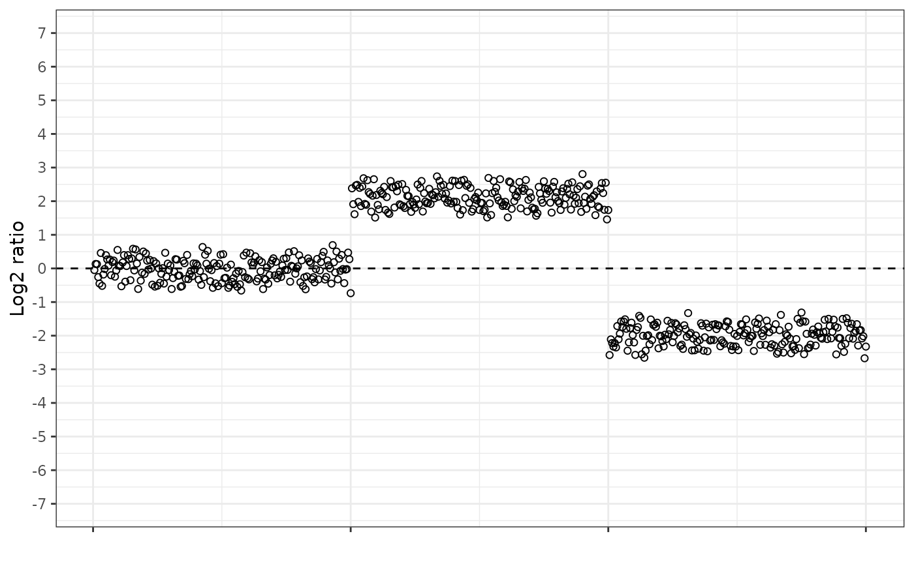
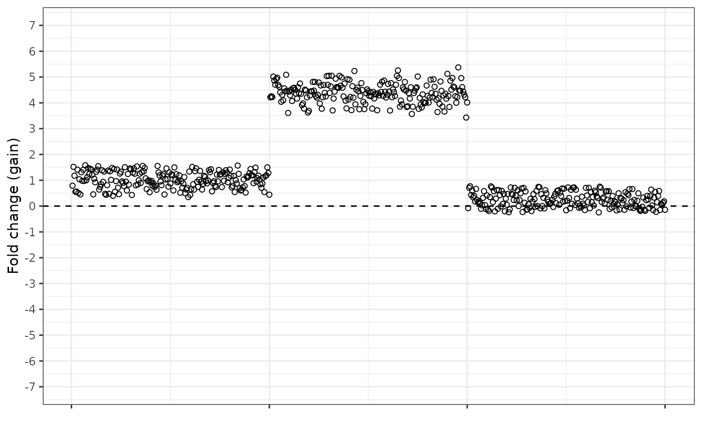

Fold changes
dosage_calculations.RmdIntroduction
Detection dosage changes of genes within cancer cells can have important implications for prognosis and treatment. Cancer samples comprise of a mixture of cells from the cancer itself and normal patient tissue (stroma).
Consequently, DNA extracted from cancer samples is a mixture of DNA from cancer cells and stromal cells.
Using Illumina next generation sequencing (NGS), gene dosage can be calculated using “depth-of-coverage” methods: the number of sequencing reads mapping to a particular locus is used to infer the dosage of that locus within the sample.
The observed number of reads can be compared to the expected number of reads for that gene locus. The expected value is derived from a cohort of normal tissue samples tested with the same NGS process.
Equations
There are different ways of presenting the relationship between observed and expected read depth.
Firstly, you can take the log2 ratio of observed vs expected read depth.
Alternatively, a “fold change” can be calculated. Two separate fold change calculations are used by Qiagen for calculating gains and losses of genetic information (described in the CLC handbook, section Copy number and fold change).
Fold change for gains is calculated as:
Fold change for losses is calculated as:
Rationale
Having two different equations for fold change may seem confusing, but the reason is to allow greater precision in dosage measurement.
The fold change loss equation provides more differentiation between coverage levels when fewer reads are observed than expected.

Conversely, the fold change gain equation is more useful when gene amplifications are present: the number of observed reads may be several fold higher than expected.
Simulated data
We can see how the different equations present an artificial dataset. This fake chromosome has a region of normal dosage, then an amplified region, then a region with a dosage loss.
The log2 ratio looks like this.

The fold change gain equation looks like this. Notice how the amplified region is “pulled up” and is more separated from the normal dosage region, and that the normal dosage region now has an average value of 1, not 0.

And the fold change loss equation looks like this. In the reverse to the gain equation, the loss equation pulls the deleted region further from the normal dosage baseline, and the normal dosage region now has an average value of -1.
We can also combine the fold change equations, so that the gain equation is used when the observed dosage is higher than expected, and the loss equation is used when the observed dosage is lower than expected. This results in a “splitting” of the central cluster of normal dosage points.